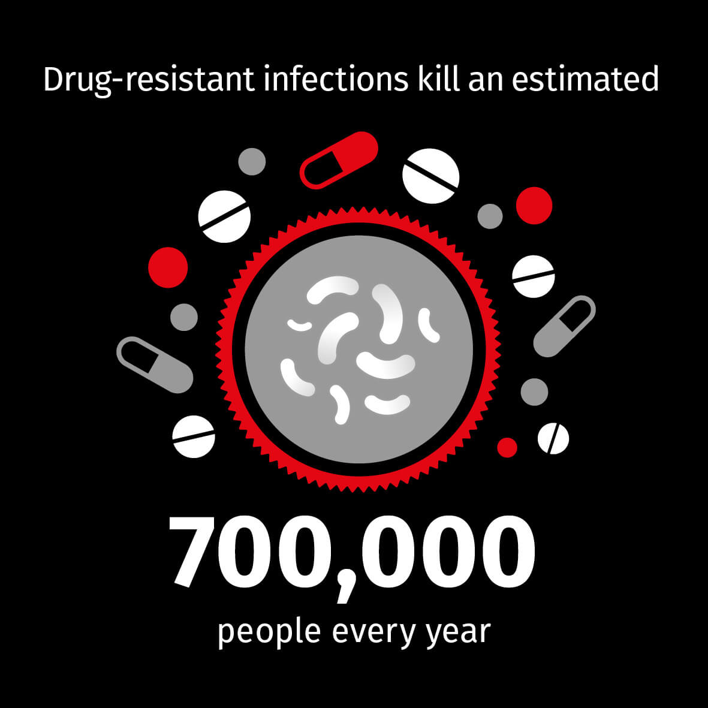

About our ANTI-BIOTIC RESISTANCE Campaign

Spreading Awareness
More antibiotics go into the food we eat than we take ourselves. About 80 percent of all antibiotics sold in the United States are used on farm animals. Most animals are dosed regularly-sometimes even daily-with antibiotic-laced food.
Free treatement to those who need it
Superbugs are increasingly appearing in food-MRSA in pork, resistant salmonella in turkey-and have caused widespread outbreaks of food poisoning in the U.S. Because meat and poultry producers are not required to report how they use.
200+
Seminars for Doctors
85
Member Countries
500+
Operations Completed
What is Anti-Biotic Resistance ?
Over-medication
Superbugs are increasingly appearing in food-MRSA in pork, resistant salmonella in turkey-and have caused widespread outbreaks of food poisoning in the U.S. Because meat and poultry producers are not required to report how they use the drugs-which ones, how much, what animals-documenting a clear connection between.
Anti-Biotics in Food
More antibiotics go into the food we eat than we take ourselves. About 80 percent of all antibiotics sold in the United States are used on farm animals. Most animals are dosed regularly-sometimes even daily-with antibiotic-laced food and water in a practice known as subtherapeutic administration.

TRY THIS AT HOME
Nevertheless, the Centers for Disease Control and Prevention and other government agencies have testified before Congress that there is a definitive link between the two. This position is supported by the American Medical Association, the American Academy of Pediatrics, the World Health Organization and other leading public health and medical groups.
Know your meat!
The entire design language/colour palette was derived from the logo. Interestingly, the logo design exercise was a back and forth process to create a logo that doesn't just represent the city but allow its graphic elements to be used as a recipe for merchandise & stationary design.